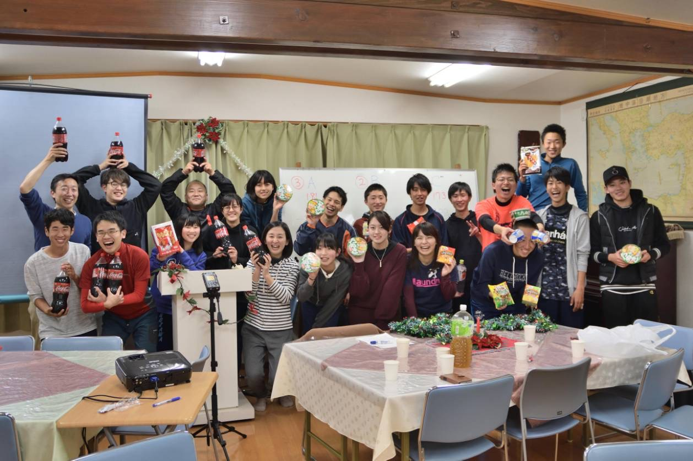
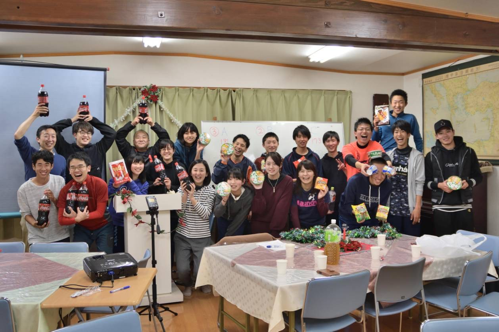

スポーツ大会を開催します
3/14 2020
今年も佐久聖書館・青年会によるスポーツ大会を開催いたします。 また、永遠のベストセラーである聖書から、わかりやすく楽しいメッセージも語られます。
スポーツはバレーボール、ドッヂビー、バスケットボールなどを予定しています。
入退場は自由で参加費もいりません。
美味しい夕食も用意しております。楽しいひと時を一緒に過ごしましょう。
3/14 2020
今年も佐久聖書館・青年会によるスポーツ大会を開催いたします。 また、永遠のベストセラーである聖書から、わかりやすく楽しいメッセージも語られます。
スポーツはバレーボール、ドッヂビー、バスケットボールなどを予定しています。
入退場は自由で参加費もいりません。
美味しい夕食も用意しております。楽しいひと時を一緒に過ごしましょう。
1990年4月3日群馬県生まれ。 首都大学東京在学中にアメリカ、ミシガン州のThe Ezekiel Project of Evangelismにて聖書について学ぶ。 大学卒業後は丸紅情報システムズ(株)にて、営業として所属。 明るく、面白く、またわかりやすいメッセージを語る。 教会(経堂キリスト集会)では青年会のリーダーを務める。
住所：〒385-0023
長野県佐久市岩村田北1-8-8
電話：0267-67-3733
住所：〒385-0031
長野県佐久市内山５２０１